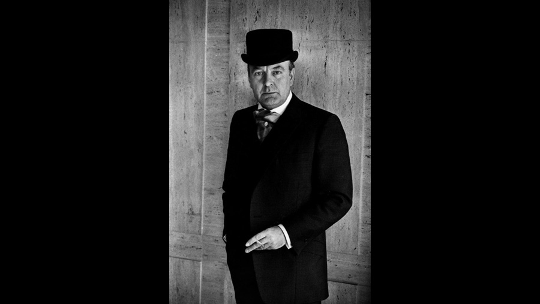

1960
CAST
John Jasper
-
Donald Sinden
Reverend Septimus Crisparkle
-
Richard Pearson
Hiram Grewgious
-
Laidman Browne
Mrs Crisparkle
-
Elsie Wagstaff
Durdles
-
Frederick Piper
Bazzard
-
Leslie Heritage
Neville Landless
-
Clifford Elkin
Edwin Drood
-
Tim Seely
Mayor Thomas Sapsea
-
George Woodbridge
Rosa Bud
-
Barbara Brown
Helena Landless
-
Katherine Woodville
Princess Puffer
-
Sonia Dresdel
Miss Twinkleton
-
Rosamund Greenwood
Mrs. Tope
-
Beatrice Varley
Lt. Tartar
-
John Flint
Mrs. Billikin
-
Rita Webb
Police Officer
-
Douglas Blackwell
Police Constable
-
Vincent Charles
Jeweller
-
Roy Hepworth
Miss Twinkleton's young lady
-
Wendy Terry
Miss Twinkleton's young lady
-
Carole Lorimer
Miss Twinkleton's young lady
-
Marian Collins
Himself
-
Raymond Francis
Herself
-
Ngaio Marsh
CREATIVE TEAM
Director
-
Mark Lawton
Screenplay
-
John Dickson Carr
John Keir Cross
BACKGROUND
London's Associated-Rediffusion televised an eight-part adaptation of the piece, which emphasised a new ending by John Dickson Carr. The half hour episodes were first telecast in October 1960.